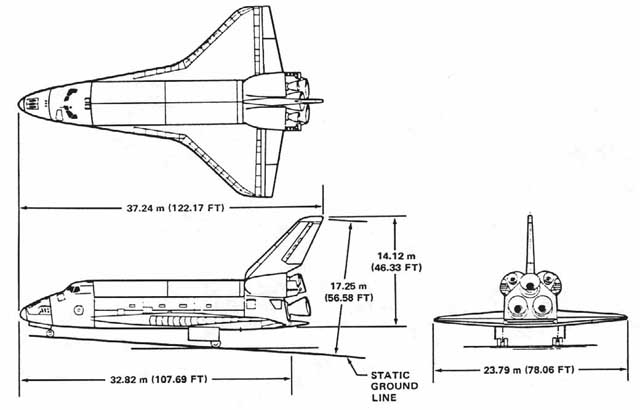
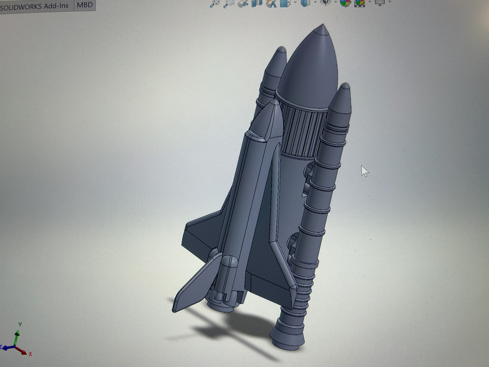
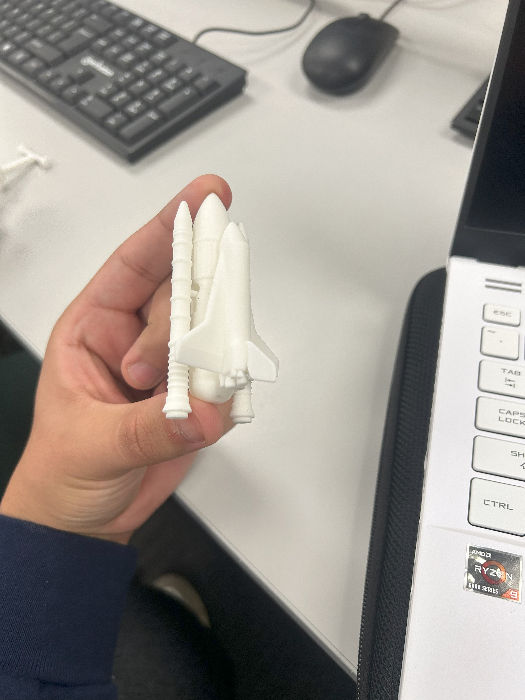

As part of the SolidWorks unit in my ME 1670(Engineering Design) course I took in my second year, we had a project to model a series of interlocking parts. I chose to design the Space Shuttle, where the interlocking parts are the SRBs, the External Tank, and the Shuttle itself. The parts were printed on a Stratasys SLS printer. I found this project a great opportunity not only to apply the modeling techniques I had learned, but to also push myself with a challenging and complex design. Additionally, because our designs were actually fabricated, a significant component of the project was to incorporate proper engineering tolerances for the interlocking features. I based my 3D model off drawings I found on NASA's website and tried to keep things as proportional as I could, while also keeping a minimum feature thickness requirement in mind. There were definitely times where the task felt almost insurmountable, but eventually my model came out looking pretty good, and just as importantly, when it got printed, the parts just fit together.
As part of the SolidWorks unit in my ME 1670 (Engineering Design) course during my second year, I designed a 3D model of the Space Shuttle, focusing on its interlocking components: the Solid Rocket Boosters (SRBs), the External Tank, and the Shuttle orbiter. The project required modeling these parts in SolidWorks and fabricating them using a Stratasys SLS printer, ensuring precise engineering tolerances for seamless assembly. This project was an opportunity to apply advanced modeling techniques while tackling a complex, real-world-inspired design.

My passion for engineering lies in creating precise, functional designs that bring conceptual ideas to life. The Space Shuttle, an iconic feat of engineering, inspired me to push my skills in 3D modeling and problem-solving. I aimed to create a model that was both visually accurate and mechanically sound with an interlocking function for the components. Even though this was an ambitious project for being so new to Solidworks, I felt that the challenge would drive my abilities to grow faster and in the end I would end up with a great desk model.

I referenced technical drawings from NASA's website to ensure proportional accuracy, converting the sketches into Solidworks drawings for each part.
With these drawings I also identified the best areas for adding custom interlocking mechanisms so the SRBs, External Tank, and Shuttle would connect.
A key challenge was incorporating engineering tolerances to ensure the parts would fit together post-fabrication. I adhered to a minimum feature thickness
requirement for the SLS printing process, adjusting dimensions to maintain structural integrity while meeting printer constraints. This required iterative
refinements, as some features, like the SRB attachment points, were initially too tight.

Aesthetically, I aimed to capture the Space Shuttle's iconic silhouette, ensuring the model was visually striking. Technically, I applied principles of mechanical
engineering to design interlocking features with precise tolerances, balancing form and function. This fusion created a model that was both a faithful representation
of the Shuttle and a demonstration of engineering precision, ready for real-world fabrication.
The final 3D-printed model was a success: the SRBs, External Tank, and Shuttle orbiter interlocked well after a deep cleaning of the unsintered powder from the interlock
voids, validating my tolerance calculations. Overall, I was pretty proud of how well everything fit, and especially how nice the model looked, some of which I can credit to my model, but
alot of which I have to credit to the incredible SLS printer my professor allowed us to use, as it achieved an astonishing level of detail for a model that fit in my hand.